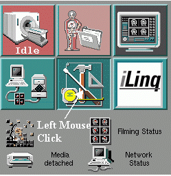
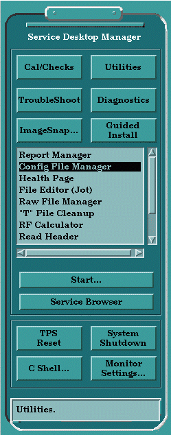
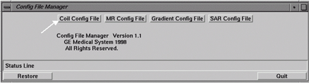
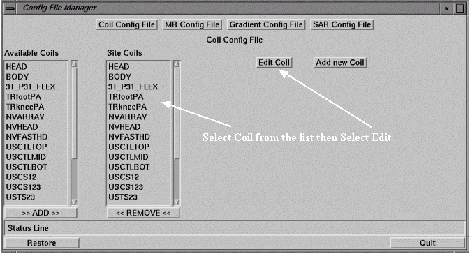
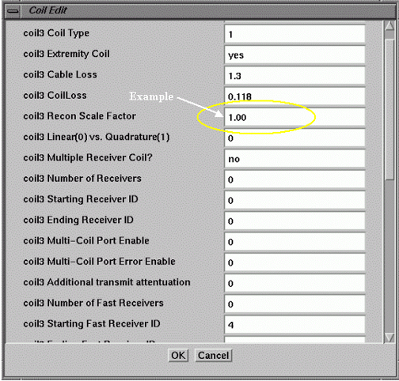

Operating Documentation
Direction 5133315-3, Rev# 14
Signa EXCITE HD 1.5T Service Methods
Module Version 1.0, Version Date 5/15/07
Operating Documentation |
| Required Persons | Preliminary Reqs | Procedure | Finalization |
|---|---|---|---|
| 1 |
The Recon Scale Factor listed in the configuration file for each Surface Coil type will determine the System Gain Value for each Surface Coil type.
Table 1: Contents
| This procedure consist of two sections: |
| Condition | Reference | Effectivity |
|---|---|---|
Insure prerequisites are completed as described in the main System Gain procedure. | - | - |
The “Configuration File Manager” tool provides pre-configured Surface Coil parameters for most coils. In this case, the scan software automatically multiplies the Surface Coil Recon Scale Factor times the Head Coil Recon Scale Factor.) Therefore, no calibration changes are required for Pre-configured Surface Coils.
| NOTE: | Do not update the Recon Scale Factors for any Pre-configured Surface Coils! Only the Head and Body coils are updated. |
Finished
The Recon Scale Factors for non-configured Surface Coils are provided in the vendor service manual. Make sure you have the vendor service manuals before starting this procedure.
At the Operator Workstation, select the Service Desktop Icon see Illustration 1
Illustration 1: DESKTOP MANAGER

Click on [Utilities], [Config File Manager], then [Start]. See Illustration 2.
Illustration 2: SERVICE DEKSTOP / UTILITIES MENU

Click on [Coil Config File] see Illustration 3.
Illustration 3: CONFIG FILE MANAGER

Check the listing of the coils for the Surface Coil to be configured, see Illustration 4. If the coil does not exist then add the coil by selecting [Add new Coil]. If the coil exists then select the coil by name and click on [Edit Coil].
Illustration 4: COIL CONFIG FILE

Look up the Recon Scale Factor in the vendor service manual and enter the value in the Recon Scale Factor line of the file, see Illustration 5.
| NOTE: | Do not multiply the Surface Coil Recon Scale Factor times the Head Coil Recon Scale Factor! |
Illustration 5: COIL EDITOR

Click on [OK], then [Quit].
After modifying the Recon Scale Factors, restart the Signa software so that the new Recon Scale Factors are used for all future scans. To restart Signa software, right click on SGI desktop wallpaper and select System Shutdown, or click [System Shutdown] in the Service Desktop Manager area. Due to a bug in the software you must wait 15 seconds before logging back in. Failure to wait 15 seconds will cause a “Host Monitor timeout in 50 secs” error. At the login screen, double click on the Signa icon and type the password adw2.0<Enter> to restart Signa software.
If no final steps are to be taken, insure the scanner is ready for patient scans by do a check scan,
Return to the main System Gain Procedure or go back to Body Calibration, Head Calibration if required.